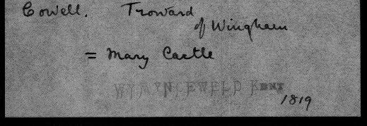
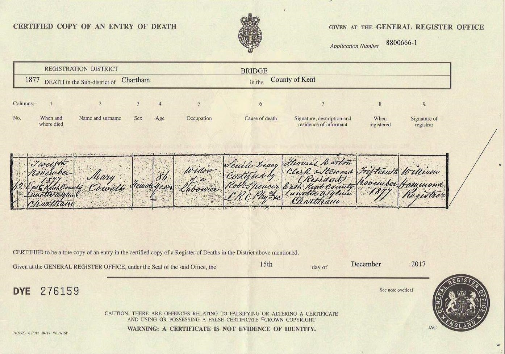
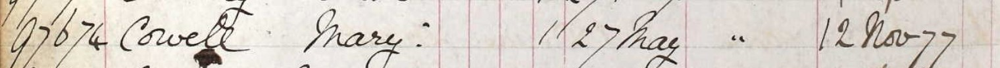

Mary Cowell (née Castle) c1796 - 1877
[ Home ] | [ Calendar ] | [ Surnames Index ] | [ Errors ] | [ Family History ]The child of William Castle and Sarah Marley, Mary Castle, the 3 times great-grandmother of Nigel Horne, was born in Womenswold, Kent, England c. 17961,2,3,4,5,6, was baptised there at St Margaret of Antioch Church on 12 Jan 1800 and also married Troward Cowell (an agricultural labourer with whom she had 9 children: Sarah, Mary Ann, Charlotte, William, Troward, Ann, Hannah, Jane and John, along with 1 surviving child) there on 6 Feb 18198 (St. Margaret's Church according to IGI).
During her life, she was living in Wingham Well, Kent, England on 6 Jun 184111; at Old Farm House, Wingham, Kent on 30 Mar 18519; at Wingham Street, Wingham, Kent on 7 Apr 186110 and in 18714; and in hospital at East Kent County Lunatic Asylum, Chartham, Kent from 27 May 1875 to 12 Nov 187712 which is where she died on 12 Nov 18777 (senile decay) (senile Decay).
Parents
- William was born in 1773
- Sarah was born in 1773
Children
- Sarah was born c. 1823
- Mary Ann was born c. 1825
- Charlotte was born c. 1826
- William was born c. 1829
- Troward was born c. 1831
- Ann was born in 1832
- Hannah was born c. 1836
- John was born in Jul 1843
Citations
- 1841 England Census Online publication - Provo, UT, USA: The Generations Network, Inc., 2006.Original data - Census Returns of England and Wales, 1841. Kew, Surrey, England: The National Archives of the UK (TNA): Public Record Office (PRO), 1841. Data imaged from the National
- 1851 England Census Online publication - Provo, UT, USA: The Generations Network, Inc., 2005.Original data - Census Returns of England and Wales, 1851. Kew, Surrey, England: The National Archives of the UK (TNA): Public Record Office (PRO), 1851. Data imaged from the National
- 1861 England Census Online publication - Provo, UT, USA: The Generations Network, Inc., 2005.Original data - Census Returns of England and Wales, 1861. Kew, Surrey, England: The National Archives of the UK (TNA): Public Record Office (PRO), 1861. Data imaged from the National
- 1871 England Census Online publication - Provo, UT, USA: The Generations Network, Inc., 2004.Original data - Census Returns of England and Wales, 1871. Kew, Surrey, England: The National Archives of the UK (TNA): Public Record Office (PRO), 1871. Data imaged from the National
- England & Wales, FreeBMD Death Index: 1837-1915 Online publication - Provo, UT, USA: The Generations Network, Inc., 2006.Original data - General Register Office. England and Wales Civil Registration Indexes. London, England: General Register Office. © Crown copyright. Published by permission of the Cont
- Public Member Trees Online publication - Provo, UT, USA: The Generations Network, Inc., 2006.Original data - Family trees submitted by Ancestry members.Original data: Family trees submitted by Ancestry members.
- England & Wales deaths 1837-2007 - Findmypast
- Pallot's Marriage Index for England: 1780 - 1837 Online publication - Provo, UT, USA: The Generations Network, Inc., 2001.Original data - The original paper slip index, from which this database was created, is owned by The Institute of Heraldic and Genealogical Studies, Canterbury, England.Original data:
- 1851 England, Wales & Scotland Census - Findmypast (was age 55 and the wife of the head of the household)
- 1861 England, Wales & Scotland Census - Findmypast (was age 65 and the wife of the head of the household)
- 1841 England, Wales & Scotland Census - Findmypast (was age 45 and the wife of the head of the household)
- UK, Lunacy Patients Admission Registers, 1846-1912
Media
Troward Cowell - Mary Castle - marriage

Mary Castle - Death Certificate

Mary Castle - Chartham Hospital Record

England Marriages 1538-1973 - R_848296320
England Marriages 1538-1973 - R_848225806/2
England Marriages 1538-1973 - R_848296320/2
England Marriages 1538-1973 Transcription - R_854601910
England Marriages 1538-1973 - R_854601910/2
1861 England, Wales & Scotland Census - GBC/1861/0003564179
England & Wales deaths 1837-2007 - BMD/D/1877/4/AZ/000074/046
England Births & Baptisms 1538-1975 - R_946144680
Kent Baptisms - GBPRS/CANT/B/96457268
Family Tree

Map
Generated by ged2site. Last updated on Jul 3, 2024